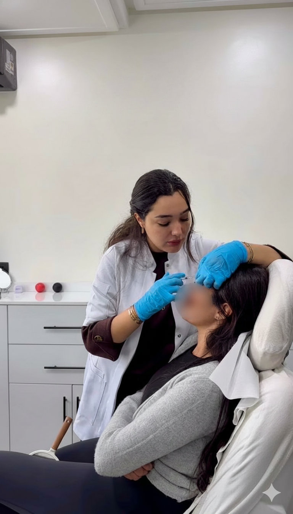

Le front est l'une des premières zones à révéler le passage des années. Les rides horizontales qui traversent le front et la ride du lion, ce pli vertical entre les sourcils, s'approfondissent progressivement sous l'effet des contractions musculaires répétées. Le botox front à Casablanca est aujourd'hui l'une des demandes les plus fréquentes au cabinet de Dr Yousra El Khadri. Rapide, sans éviction sociale et aux résultats naturels, ce traitement permet d'atténuer des rides déjà présentes, ou d'agir de façon préventive avant qu'elles ne s'installent durablement. Dans cet article, découvrez les zones concernées, le déroulement d'une séance, la durée des effets et l'approche du cabinet en matière de consultation.
Qu'est-ce que le botox du front ?
Le botox, ou toxine botulique de type A, est une protéine purifiée qui agit en bloquant temporairement la contraction des muscles injectés. Appliqué sur le front, il détend les muscles frontaux et les muscles corrugateurs, responsables des rides d'expression horizontales et verticales.
Son action est précise et dosée : il ne fige pas le visage, il l'apaise. Bien réalisé, le résultat est un visage plus reposé, plus ouvert, qui conserve toute son expressivité naturelle. C'est d'ailleurs la philosophie de Dr El Khadri : un dosage adapté à chaque patiente, pas un protocole identique pour toutes.
Le botox du front convient aussi bien à une approche corrective, pour atténuer des rides déjà marquées, qu'à une approche préventive, de plus en plus plébiscitée dès 25-30 ans. Pour découvrir l'ensemble des zones traitables par botox au cabinet, consultez la page dédiée aux injections de botox.
Quelles zones du front peut-on traiter avec le botox front Casablanca ?
Les rides horizontales du front
Ces lignes parallèles qui traversent le front apparaissent lorsque vous levez les sourcils ou exprimez la surprise. Elles sont causées par le muscle frontal, un muscle puissant qui travaille en contraction permanente tout au long de la journée. Quelques unités de botox suffisent à les lisser considérablement, tout en préservant la mobilité naturelle des sourcils et l'expressivité du regard.
C'est la zone la plus fréquemment traitée. Les résultats sont visibles rapidement et immédiatement appréciés par les patientes qui voient leur regard s'ouvrir et leur visage s'adoucir.
La ride du lion et la glabelle
Située entre les deux sourcils, la ride du lion est ce pli vertical, parfois double, qui donne au visage une expression de tension ou de contrariété même au repos. Les muscles corrugateurs et procérus, responsables du froncement, répondent très bien à la toxine botulique.
C'est l'une des zones où les résultats sont les plus spectaculaires : le visage se détend visiblement, l'expression s'allège. Les effets sont souvent perceptibles dès J+5, avec un résultat optimal à J+14.
Le botox préventif : agir avant que les rides s'installent
De plus en plus de patientes choisissent le botox préventif entre 25 et 35 ans, avant que les rides dynamiques ne deviennent des rides statiques gravées dans la peau au repos. L'objectif n'est pas de bloquer toute expression, mais de réduire l'intensité des contractions pour ralentir durablement l'apparition des marques.
Cette approche préventive est particulièrement pertinente pour les peaux à fort tonus musculaire, celles qui sourient beaucoup ou qui ont des antécédents familiaux de rides précoces. Pour savoir si vous êtes concernée par les rides du front, consultez notre page sur les traitements des rides.
Comment se déroule la séance au cabinet de Dr Yousra El Khadri ?

Au cabinet situé au Quartier des Hôpitaux à Casablanca, chaque séance commence par une courte consultation. Dr El Khadri observe votre visage en dynamique, c'est-à-dire en mouvement, pour évaluer l'intensité des contractions et définir précisément les points d'injection les mieux adaptés à votre anatomie.
La séance d'injection dure entre 15 et 20 minutes. Des aiguilles ultra-fines sont utilisées pour déposer de petites quantités de toxine botulique dans les muscles cibles. La plupart des patientes décrivent une légère sensation de picotement, sans douleur significative. Aucune anesthésie n'est nécessaire.
À l'issue de la séance, quelques consignes simples vous sont données : éviter de vous allonger pendant 4 heures, ne pas masser la zone traitée, et rester à la verticale le reste de la journée. Les premiers effets sont visibles entre J+2 et J+5, et le résultat optimal s'observe à J+10 à J+14.
Résultats, durée et entretien
Les effets du botox du front durent en moyenne de 4 à 6 mois. Cette durée varie selon plusieurs facteurs : le métabolisme de chaque patiente, l'intensité des expressions faciales au quotidien, et le nombre de séances déjà réalisées. Les patientes très sportives voient parfois les effets s'estomper légèrement plus tôt.
Avec des séances régulières, les muscles apprennent progressivement à contracter moins fort, ce qui permet d'espacer davantage les injections avec le temps. Certaines patientes atteignent un rythme de deux séances par an après 2 à 3 ans de traitement.
Le résultat final, lorsqu'il est bien dosé, est un front lisse et reposé, en harmonie naturelle avec le reste du visage, sans signe visible d'intervention.
Précautions et contre-indications
Le botox du front est contre-indiqué dans certaines situations médicales. Il ne doit pas être pratiqué pendant la grossesse ou l'allaitement, ni en cas de maladies neuromusculaires (comme la myasthénie), d'allergie connue à la toxine botulique, ou de prise de certains médicaments anticoagulants.
Il est également déconseillé si vous présentez une infection cutanée active sur la zone à traiter. La consultation préalable avec Dr El Khadri permet d'évaluer votre profil et de vous informer de tout risque spécifique à votre situation.
Les produits utilisés au cabinet sont issus de laboratoires médicaux certifiés, notamment Galderma (Suisse) et Merz Aesthetics (Allemagne), connus pour la qualité et la traçabilité de leurs produits injectables. Pour en savoir plus sur nos partenaires de confiance, consultez la page partenaires du cabinet.
Foire aux questions sur le botox du front à Casablanca
Prendre rendez-vous au cabinet de Dr Yousra El Khadri
Pour toute consultation au cabinet de Dr Yousra El Khadri, situé au Quartier des Hôpitaux à Casablanca, deux options s'offrent à vous. Chaque consultation est personnalisée et commence par une analyse de votre visage en dynamique.
Lundi au vendredi : 9h à 19h · Samedi : 9h à 14h